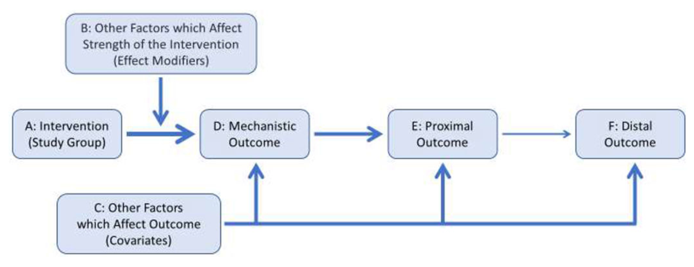
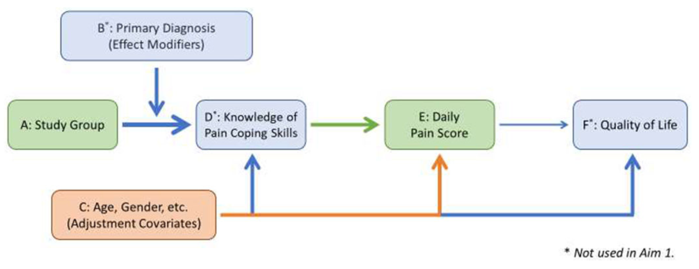
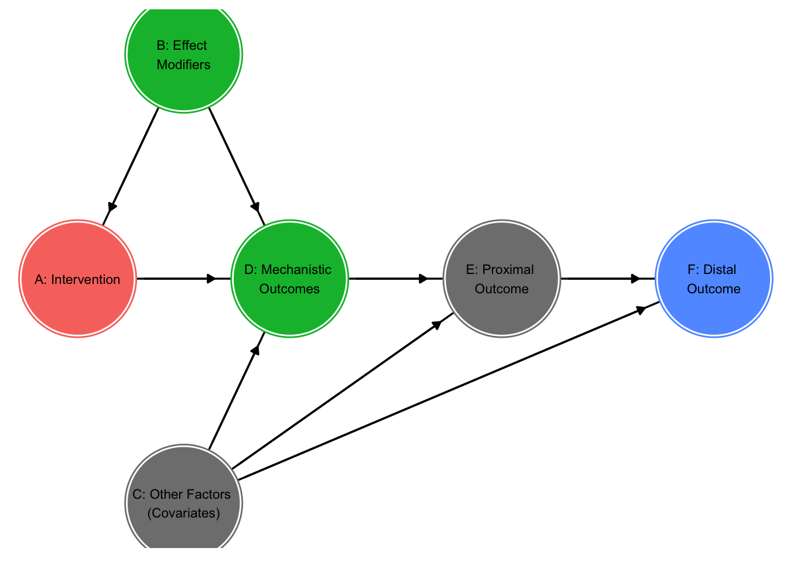

13 Causal Dag
13.1 Causal DAG
Directed Acyclic Graph (DAG) is a graphical representation of causal relationships between variables. It is a useful visual tool for developing the statistical analysis plan for a randomized trial, and helps facilitate communication between statisticians and other investigators.
13.1.1 Causal DAG in the paper
Code
knitr::include_graphics("figures/F23_causal_dag1.png")
Code
knitr::include_graphics("figures/F23_causal_dag2.png")
13.1.2 DAG with ggdag
Here is the package ggdag to build a DAG. The package dagitty is used to work with DAG logic.
But it seems really hard to use in the case.
Here is the DAG for the example in the paper.
Code
df_labels = data.frame(x = c(A = 1, D = 2, E = 3,
`F` = 4, B = 1.5, C = 1.5),
y = c(A = 0, D = 0, E = 0,
`F` = 0, B = 0.5, C = -0.5),
label = c("A: Intervention", "D: Mechanistic \nOutcomes",
"E: Proximal \nOutcome",
"F: Distal \nOutcome", "B: Effect \nModifiers",
"C: Other Factors \n(Covariates)"))
dag <- dagify(`F` ~ E, E ~ D, D ~ A,
A ~ B, D ~ B,
`F` ~ C, E ~ C, D ~ C,
latent = c("B", "D", "F"),
exposure = "A",
outcome = "F",
coords = list(x = c(A = 1, D = 2, E = 3,
`F` = 4, B = 1.5, C = 1.5),
y = c(A = 0, D = 0, E = 0,
`F` = 0, B = 0.5, C = -0.5)))
ggdag_status(dag,
node_size = 35,
edge_type = "link_arc",
text = FALSE,
stylized = TRUE,
check_overlap = TRUE) +
guides(fill = FALSE, color = FALSE) +
geom_dag_edges(start_cap = ggraph::circle(15, 'mm'),
end_cap = ggraph::circle(17, 'mm')) +
geom_text(data = df_labels,
aes(x = x, y = y,
label = label),
inherit.aes = FALSE,
size = 3) +
theme_dag_blank() 
Code
# expand_plot(expand_y = expansion(c(0, 0)))
13.1.3 DAG with DiagrammeR
Here is the DAG for the example in the paper.
Code
flowchart2 <- DiagrammeR::grViz("
digraph {
graph [layout = dot, rankdir = UD]
# Define node styles
node [shape = rectangle, style = filled, fontsize = 12, fontname = Helvetica]
{# Nodes with colors
edge [dir = none]
A [label = 'A: Study Group'];
invis1 [shape = none, style = invis]
D [label = 'D*: Knowledge of Pain Coping Skills', fillcolor = lightblue]
A -> invis1 [headclip=false]}
E [label = 'E: Daily Pain Score'];
F [label = 'F*: Quality of Life\\n(* Not used in Aim 1)', fillcolor = lightblue];
{rank = same; A; invis1; D; E; F}
# Draw arrows from A to D, E, and F
invis1 -> D [tailclip=false]
D -> E -> F
B [label = 'B*: Primary Diagnosis\\n(Effect Modifiers)', fillcolor = lightblue];
B -> invis1 [headclip=false] # helps position B above
C [label = 'C: Age, Gender, etc.\\n(Adjustment Covariates)', fillcolor = lightsalmon];
# Other arrows
C -> {D, E, F}
}")Code
flowchart2